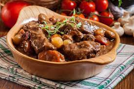
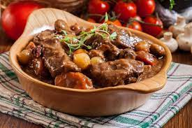

.jpeg)
.jpeg)
.jpeg) 

Ingredientes:
- 1 kg de acém
- 400 g de batata bolinha (cerca de 15 unidades)
- 2 cenouras
- 1 cebola
- 4 dente de alho
- 1 colher (sopa) de extrato de tomate
- 1 colher (sopa) de extrato de tomate
- azeite a gosto
- 2 folhas de louro
- tempero a gosto
1. Corte o acém em cubos de cerca de 3 cm e tempere. Numa chaleira, leve um pouco mais de 1 xícara (chá) de água ao fogo médio para ferver. Numa chaleira, leve um pouco mais de 1 xícara (chá) de água ao fogo médio para ferver.
2. Leve a panela de pressão (sem a tampa) ao fogo médio. Quando aquecer, regue com 1 colher (sopa) de azeite, adicione a cebola, tempere com uma pitada de sal e refogue por 2 minutos, até murchar. Junte o alho, o extrato de tomate e as folhas de louro e mexa por 1 minuto. Acrescente 1 colher de sopa e azeite e mexa por mais 2 min.
3. Regue com o vinagre e 1 xícara (chá) de água fervente. Tempere com mais 1 colher (chá) de sal, junte a carne e misture delicadamente. Tampe a panela e aumente o fogo. Quando começar a apitar, abaixe o fogo e deixe cozinhar por 25 minutos. Enquanto isso, prepare os demais ingredientes.
4. Com uma escovinha para legumes, lave bem a casca das batatas. Corte cada uma ao meio, no sentido do comprimento. Descasque e corte as cenouras ao meio, no sentido do comprimento, e fatie as metades em meias-luas de 1 cm, na diagonal.